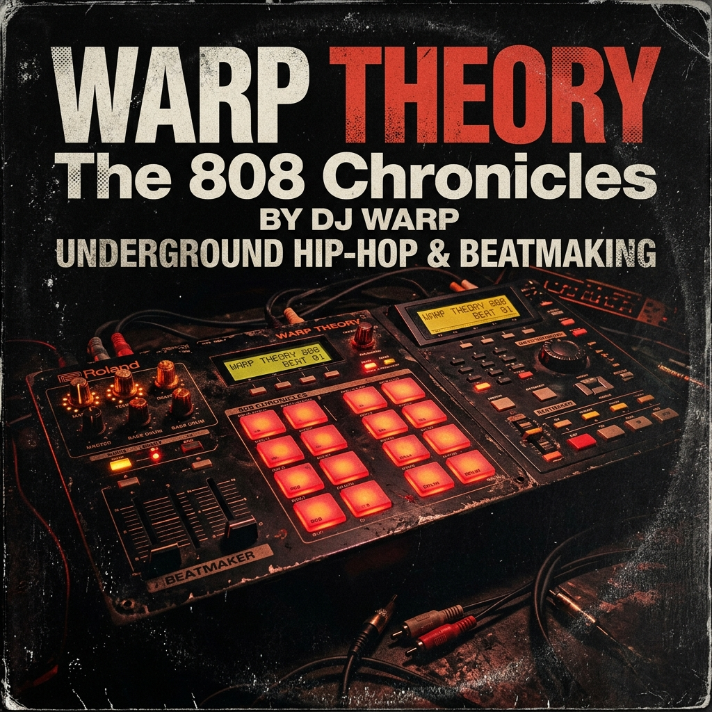
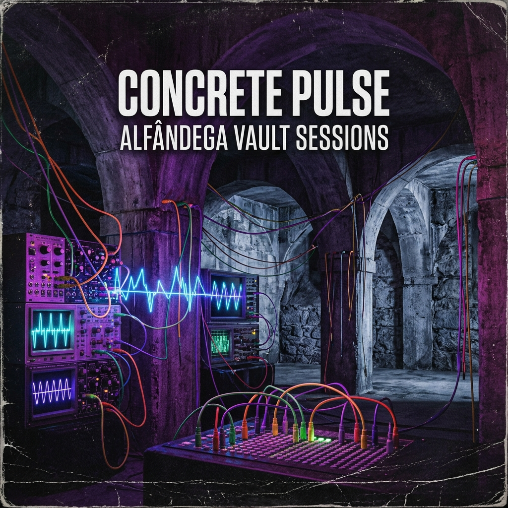

Caixa de Discos (Vinyl Crate) & Deck em Leque
Uma metáfora tangível da cultura crate digging do festival DRUMTIKS: uma caixa de discos de vinil onde, ao passar o rato (:hover), os 3 álbuns fictícios emergem e abrem em leque. Ao passar diretamente sobre um dos discos, o vinil físico desliza para fora da manga e roda.
Curva de Aceleração (
transition-timing-function):
Passa o cursor por cima da caixa para abrir em leque • Passa sobre um disco para o retirar


Álbuns Fictícios DRUMTIKS '26 (Gerados pelo Gemini)
Três capas exclusivas geradas para apoiar a narrativa visual e a metáfora do exercício.
Disco 1 (Esquerda)
WARP THEORY
DJ Warp • The 808 ChroniclesFoco em boom-bap analógico cru, pads retroiluminados em carmesim e tipografia de desgaste industrial. No leque roda a -16deg com transição sequencial imediata.
Disco 2 (Centro)
CONCRETE PULSE
Vault Collective • Alfândega SessionsBrutalismo arquitetónico e ondas modulares em tons de néon violeta elétrico. No leque eleva-se pelo centro com atraso de 0.08s.
Disco 3 (Direita)
DUST & GROOVES
Crate Diggers Porto • Cuts Vol. 1Macro close-up de sulcos fonográficos com reflexos dourados e braço de gira-discos. No leque roda a +16deg com atraso escalonado de 0.16s.
Análise Técnica: O Modelo IPO das Curvas Bézier e Abertura em Leque
O efeito de leque físico é alcançado através de transformações combinadas no espaço 3D (translate3d, rotateZ) orquestradas com valores desfasados de transition-delay e curvas de aceleração:
/* 1. Transição Master com curva de mola dinâmica */
.album-card {
transform-origin: bottom center; /* Ponto de ancoragem na base */
transition:
transform var(--active-duration) var(--active-ease),
box-shadow var(--active-duration) var(--active-ease);
}
/* 2. No hover do contentor, os discos abrem em leque com delay escalonado */
.crate-container:hover .album-card[data-index="1"] {
transform: translate3d(-150px, -110px, 30px) rotate(-16deg) scale(1.02);
transition-delay: 0.0s;
}
.crate-container:hover .album-card[data-index="2"] {
transform: translate3d(0, -150px, 70px) rotate(0deg) scale(1.08);
transition-delay: 0.08s;
}
.crate-container:hover .album-card[data-index="3"] {
transform: translate3d(150px, -110px, 30px) rotate(16deg) scale(1.02);
transition-delay: 0.16s;
}
/* 3. Disco de vinil sai da capa quando se passa o rato diretamente no álbum */
.album-card:hover .vinyl-disc {
transform: translateX(52%) rotate(135deg);
transition: transform 0.5s var(--active-ease);
}